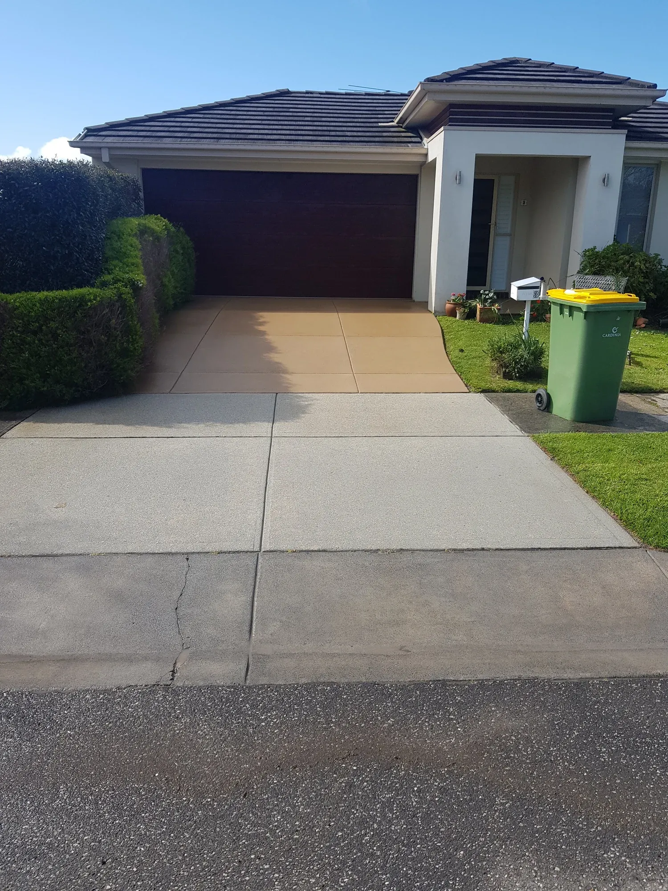
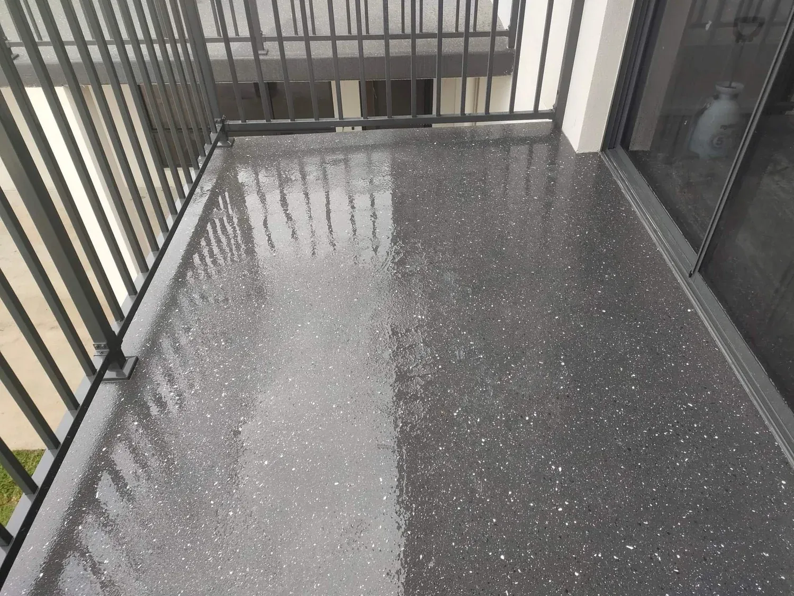
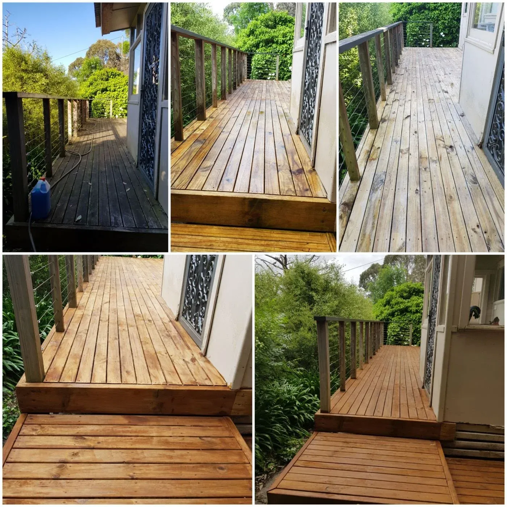
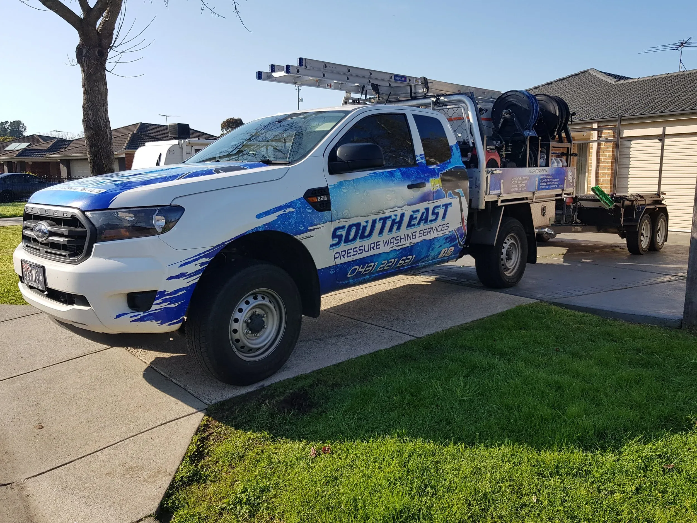

Most popular
Most popularPressure Washing
High-pressure and soft washing for driveways, paths, house exteriors, fences, patios and commercial sites.
- Driveways, paths & patios
- House & roof washing
- Commercial forecourts
Professional pressure washing, concrete sealing and external window cleaning that brings tired driveways, homes and business exteriors back to life — right across the Latrobe Valley and South-East Melbourne.

SEPWS Pty Ltd (South East Pressure Washing Services) is a Morwell-based, owner-operated business delivering pressure washing, concrete sealing and external window cleaning across Traralgon, the Latrobe Valley and South-East Melbourne.
Founded and run by Ben Field, we treat every driveway, home and shopfront like it's our own. From a single stained driveway to a full commercial forecourt, we bring the right equipment, the right technique and a genuine eye for detail — so the finished result speaks for itself.
The right pressure for each surface — no damage, no guesswork.
Driveways, paths, fences and glass restored to like-new.
Pick the service you need below — each links to a dedicated page with process, pricing guidance and the suburbs we cover.
Most popularHigh-pressure and soft washing for driveways, paths, house exteriors, fences, patios and commercial sites.

Protect and enhance driveways, exposed aggregate and paths with a long-lasting seal that repels stains and weather.

Streak-free exterior glass for homes and businesses — windows, shopfronts, balustrades and more.
Grime, mould and lichen gone in a single visit. Every photo below is a genuine SEPWS job across Gippsland & South-East Melbourne.



Built-up mould, algae and lichen don't just look bad — over time they break down concrete, paint and timber. Regular exterior cleaning restores kerb appeal and helps your surfaces last longer.
Call, message or request a quote online. Tell us the surface and suburb.
We assess the job and send a clear, fixed price — no surprises.
We arrive on time with pro gear and get to work, treating your property with care.
Walk out to a restored driveway, home or shopfront you'll be proud of.

When you book SEPWS you're not calling a call-centre — you're dealing with a local owner-operator who turns up, does the job properly and stands behind the result.
Based in Morwell, covering Gippsland & South-East Melbourne.
The correct method and pressure for each surface.
Free quotes and clear prices before we start.
A few words from customers across Gippsland and South-East Melbourne.
"Our driveway looked brand new. Ben was on time, friendly and the price was exactly what he quoted. Couldn't recommend SEPWS more highly."
"Had our exposed aggregate cleaned and sealed. The colour came back beautifully and it still beads water months later. Professional from start to finish."
"We use SEPWS for our shopfront windows and forecourt. Always reliable, always spotless. Makes a real difference to how the business looks."
From our Morwell base we cover the Latrobe Valley and right along the South-East Melbourne corridor. If your suburb is nearby and not listed, just ask — chances are we can help.
Quick answers to what Gippsland & South-East Melbourne locals ask us most.
Most residential jobs in Traralgon and Gippsland are priced by surface area and how heavily soiled the surface is. A standard driveway or single-storey house wash usually falls into an affordable fixed-price range. We always provide a free, no-obligation quote first, so you know the exact cost before we start.
Yes. We clean and seal exposed aggregate, plain and coloured concrete driveways across Traralgon, Warragul and the Latrobe Valley. Sealing protects against oil stains, moss and weathering while enhancing the colour and finish.
We service Traralgon, Morwell, Moe, Churchill, Trafalgar, Yarragon, Warragul and Drouin across Gippsland, plus Pakenham, Berwick, Officer, Narre Warren, Dandenong, Frankston, Cranbourne, Mornington, Hastings and the wider South-East Melbourne corridor.
For most Gippsland homes, an exterior house and driveway wash every 12–18 months keeps mould, lichen and grime under control. Shaded, tree-lined or coastal properties often benefit from a yearly clean.
Absolutely. We provide streak-free external window cleaning for both residential and commercial properties across Traralgon, Morwell and South-East Melbourne, including shopfronts, offices and multi-storey glass.
Get a fast, free quote for pressure washing, concrete sealing or external window cleaning anywhere across Gippsland & South-East Melbourne.